Своя LoRA
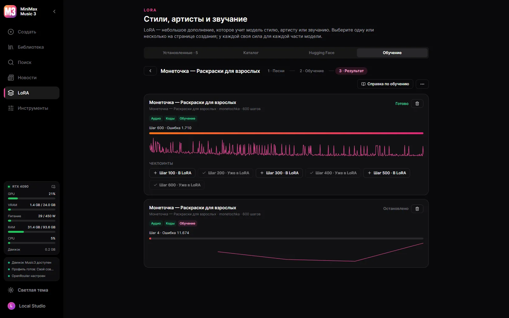
Песни одного артиста или стиля превращаются в LoRA на вашей видеокарте — тренером и рецептом HOT-Step.
Десктопная студия для MiniMax Music3 под Windows.
Windows 10/11 x64 и видеокарта NVIDIA — GTX 900 и новее. Модели скачиваются из самой студии и только по вашей команде — сама она ничего не тянет.
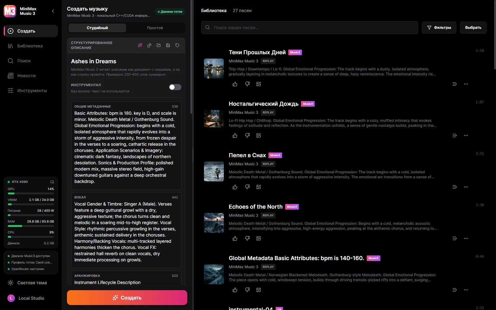

Песни одного артиста или стиля превращаются в LoRA на вашей видеокарте — тренером и рецептом HOT-Step.
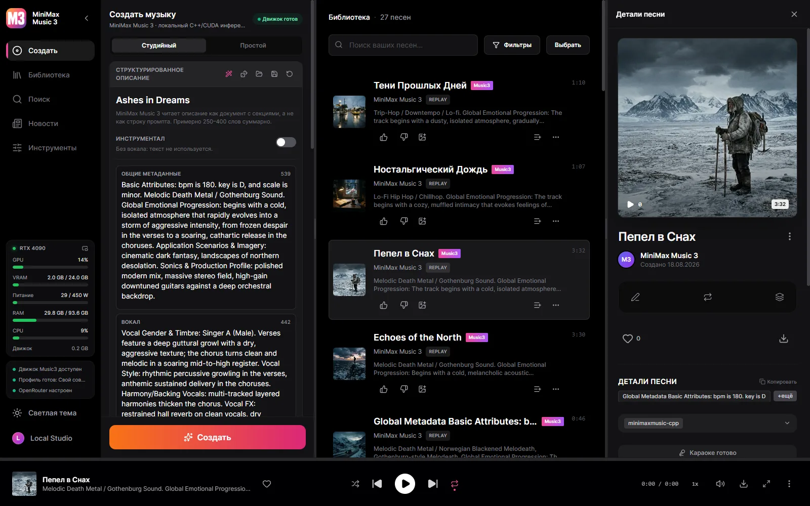
Enhanced LRC с таймингом на каждое слово: выравнивание через Parakeet, Whisper или облако — текст ваш, из распознавания берётся только время.
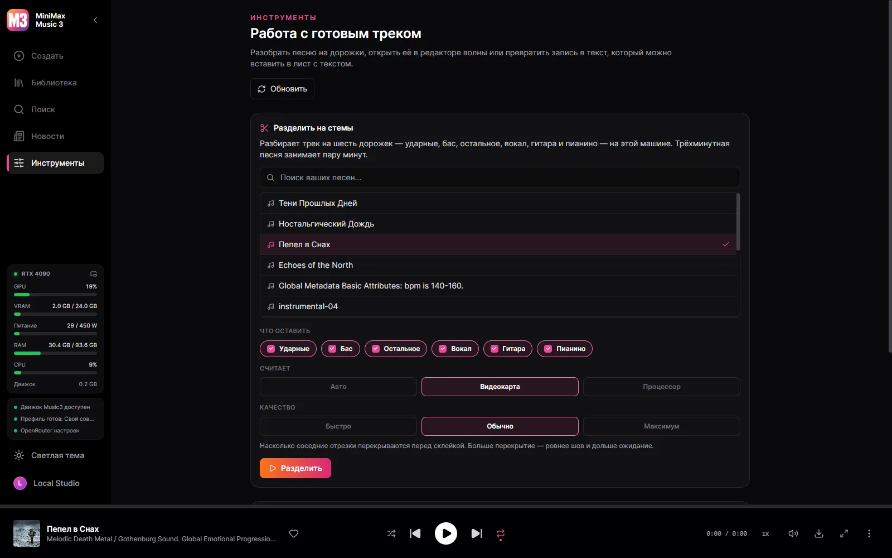
Шесть дорожек — ударные, бас, остальное, вокал, гитара, пианино — разбирает HT-Demucs на карте или на процессоре, как решите.
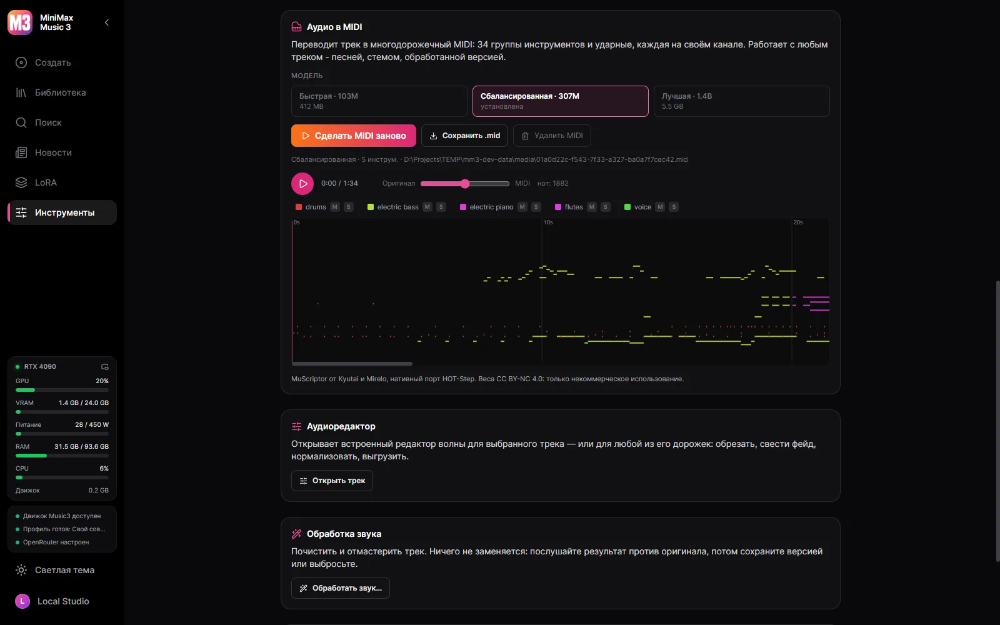
Песня, стем или обработанная версия превращается в многодорожечный MIDI — 34 группы инструментов и ударные — моделью MuScriptor на вашей видеокарте.

Десятиполосный эквалайзер на частотах Winamp с его пресетами и файлами .EQF; MilkDrop с сотнями пресетов или спектр в десяти видах; и режим Winamp, чьи окна разъединяются, стыкуются и растягиваются, в оригинальном скине или любом из музея скинов Winamp.
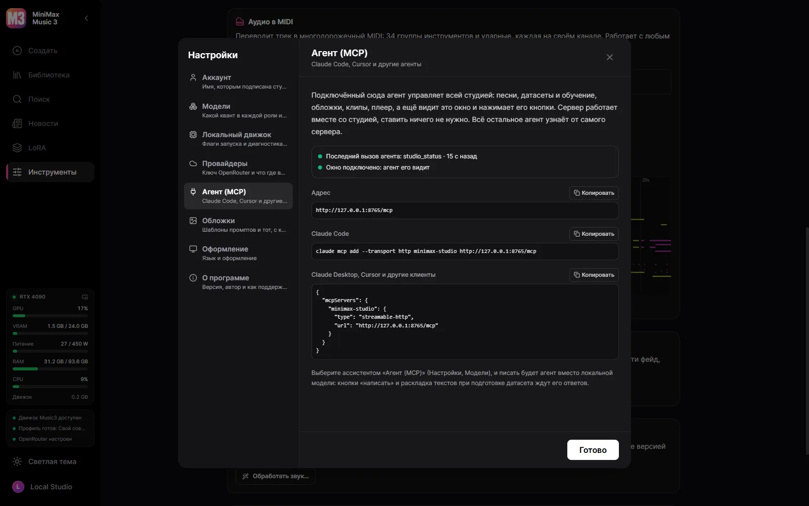
Подключите Claude Code, Claude Desktop или Cursor — и агент делает всё, что умеет студия: пишет и генерирует песни, заполняет датасет и обучает, рисует обложки, собирает клипы в видеоредакторе, включает песни, а ещё видит окно и нажимает его кнопки.
Сама студия — на вашем языке.
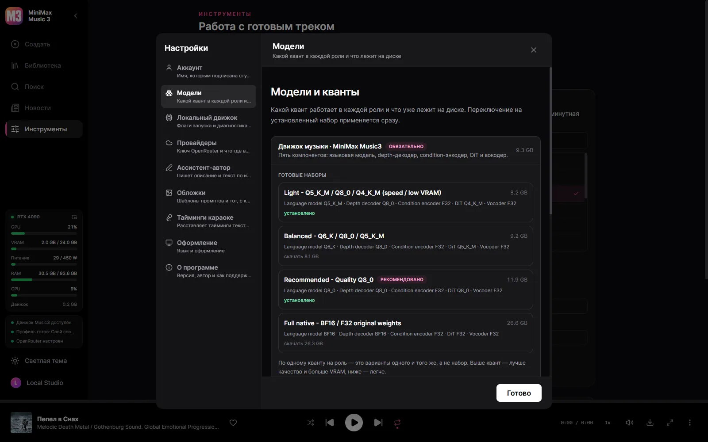
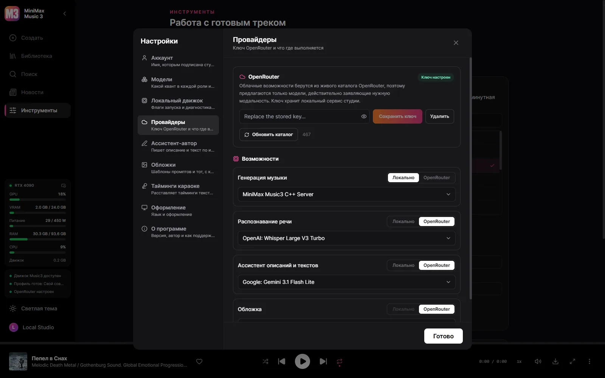
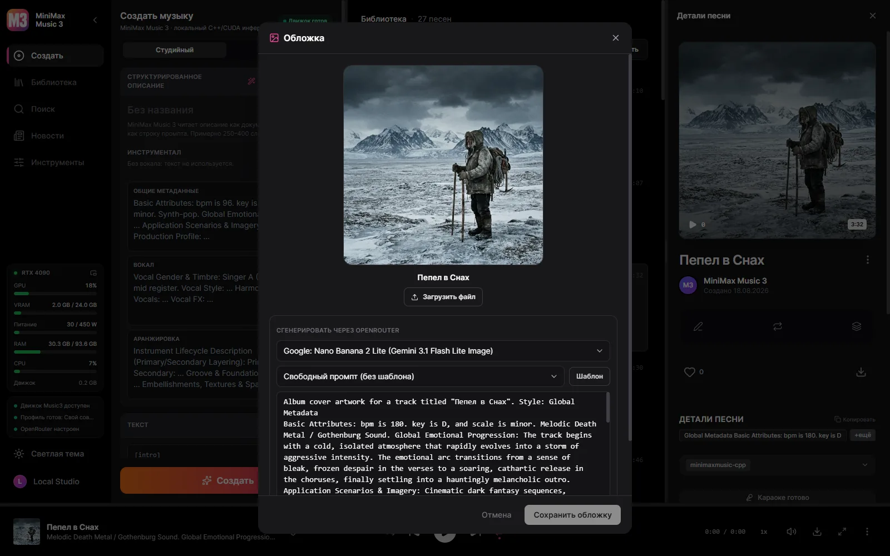
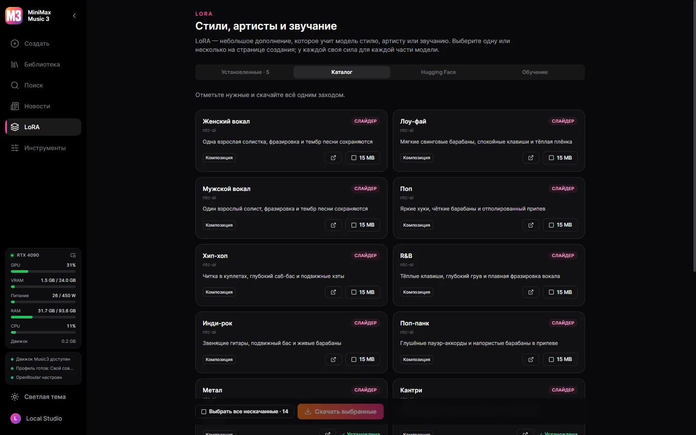
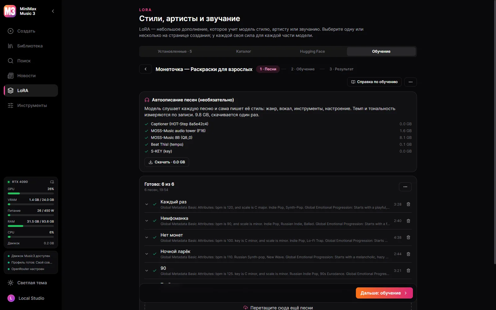
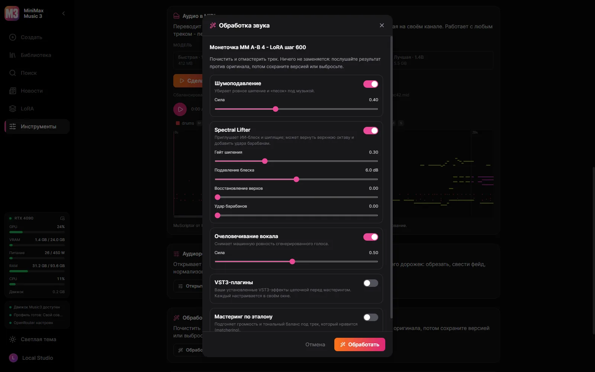
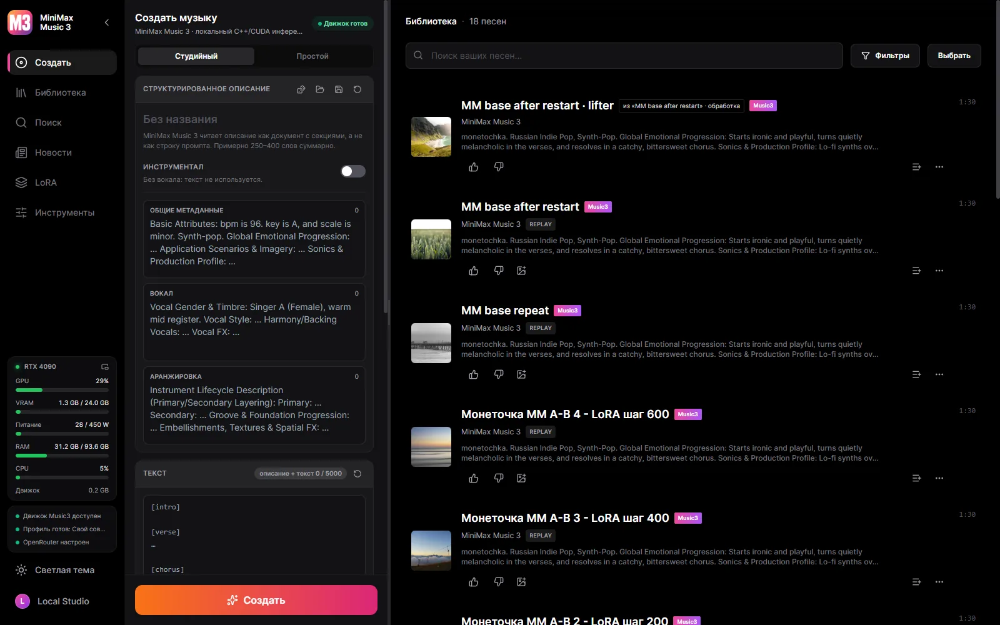
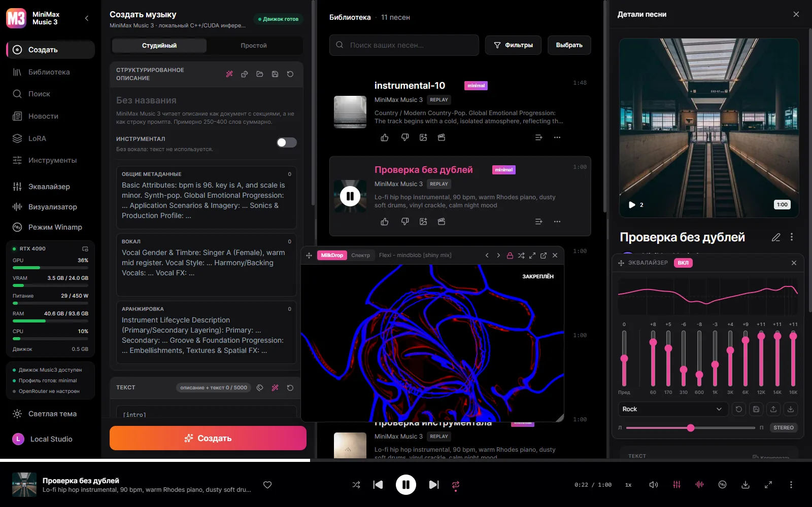
Windows 10/11 x64 и видеокарта NVIDIA — GTX 900 и новее. Модели скачиваются из самой студии и только по вашей команде — сама она ничего не тянет.
Рабочая установка Music3 — это всегда пять компонентов: языковая модель, RVQ depth-декодер, condition-энкодер, DiT и вокодер.
| Видеокарта | Профиль | Загрузка |
|---|---|---|
| 30 GB+ | Full Native — BF16 / BF16 / F32 | 28.6 GB |
| 15 GB+ | Q8 Quality | 12.8 GB |
| 11.5 GB+ | Balanced — Q6 / Q8 / Q5 | 9.8 GB |
| 9.5 GB+ | Light — ради скорости и малой VRAM | 7.7 GB |
| 8 GB | Minimal — Q3, для карт 8 ГБ | 6.5 GB |
Студия определяет карту и заранее выбирает профиль, который на ней реально пойдёт, но скачивание — всегда ваше решение. Каждый файл сверяется по контрольной сумме с зафиксированной ревизией на Hugging Face, а прерванная загрузка продолжается с места остановки.
Да. Студия бесплатная и с открытым кодом, модели скачиваются бесплатно прямо из неё.
Коротко: ваша музыка — ваша и остаётся на вашем диске.
Студия с открытым исходным кодом. Веса MiniMax Music3 распространяются по собственной community-лицензии: коммерческое использование обязано указывать имя MiniMax-Music3 и выполнять требования этой лицензии.
Песни одного артиста или стиля превращаются в LoRA на вашей видеокарте — тренером и рецептом HOT-Step. Каждую настройку можно поменять, датасеты переносятся между этой студией и YuE2 Studio.
Подключите Claude Code, Claude Desktop или Cursor — и агент делает всё, что умеет студия: пишет и генерирует песни, заполняет датасет и обучает, рисует обложки, собирает клипы в видеоредакторе, включает песни, а ещё видит окно и нажимает его кнопки. Правила описаний от самих MiniMax идут в комплекте, поэтому описания и тексты агент пишет сам. Выберите агента ассистентом — и тексты он будет писать вместо локальной модели.
По умолчанию всё локально. Облачный ключ добавляете вы сами и ровно для той возможности, для которой решили, — и можете забрать обратно.
| Часть | Где считает | Размер |
|---|---|---|
| Движок MiniMax Music3 (minimaxmusic.cpp) | Ваша видеокарта, CUDA | в комплекте |
| Набор моделей Music3 — пять компонентов | Ваша видеокарта | 6.5–28.6 ГБ |
| Тайминги караоке — Parakeet или Whisper | Ваша машина | по желанию |
| Разделение на стемы — HT-Demucs, шесть дорожек | Видеокарта или процессор | 136 МБ |
| Ассистент-автор | Локальная GGUF или OpenRouter | на ваш выбор |
| Обложки | Модель изображений OpenRouter | только облако |
| Сборка видео — ffmpeg | Ваша машина | в комплекте |
| Обучение LoRA — HOT-Step ace-train | NVIDIA RTX 30 и новее, 22 ГБ видеопамяти | 10.5 ГБ, по желанию |
| Описание песен на слух — MOSS-Music-8B | около 12 ГБ видеопамяти | 10 ГБ, по желанию |
| VST3-хост — HOT-Step | Ваш компьютер, отдельный процесс | в комплекте |
| Аудио в MIDI — MuScriptor (HOT-Step ace-midi) | NVIDIA GTX 16 / RTX 20 и новее | 0.5–5.6 ГБ, по желанию |
Служба вкомпилирована в десктопный бинарник и присматривает за C++-движком. Закрыли приложение — умерло всё, что оно запускало.
React UI ─┐
├─ MiniMax Music3 Studio.exe (window + native service)
Rust axum ┘ │
└─ minimaxmusic.cpp `mm-server` (C++/CUDA, GGUF)